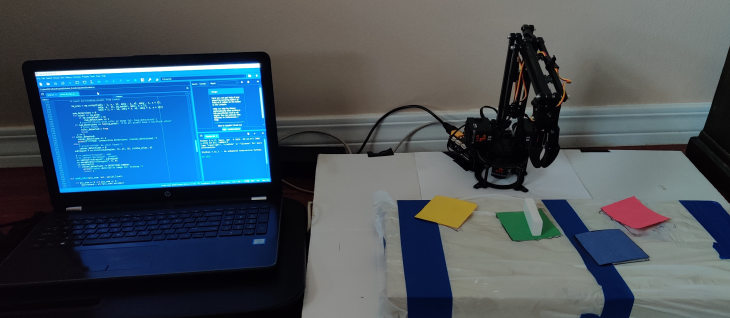

Lynxbot: A Color-controlled 3DoF Robot Manipulator¶
Videos:
Reports: Download the concatenated reports.
Code [disclaimer] : View the project repository on GitHub.
Robot(s) Used:
Lynxmotion SES-V2 3DoF Robot Arm
Synopsis¶
My first robotics project, the purpose of this work was to assemble the Lynxmotion SES-V2 Robot Arm (3DoF) and use it to implement a color-based pick-and-place operation. In the process, I improved my understanding of:
Robot Assembly
Interfacing with servos
Basic color detection
Forward and Inverse Kinematics Derivation and Implementation
Serial communication
Project management
Footnotes
[disclaimer]
Disclaimer: I have made considerable improvements in programming ability since this project 🙂.